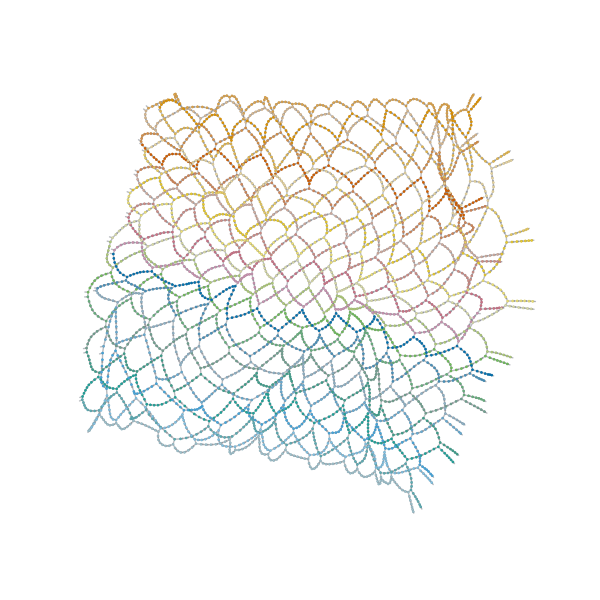
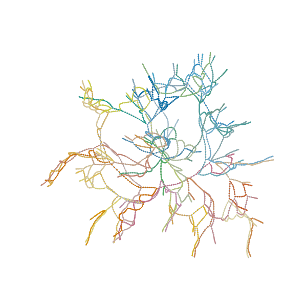
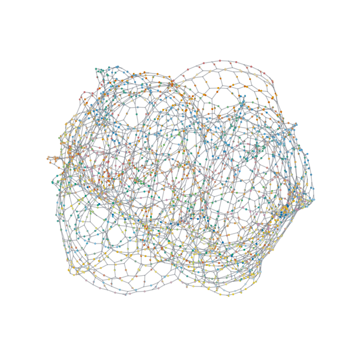

Founder-led tech consulting · Greater Chicago Area
AI consulting on both sides of the network. Local AI that matches the cloud. Cloud AI that scales to 100k users.
Multimodal Works LLC is an applied-AI consultancy. We build local-first AI workstations that match cloud chatbot UX on your own network, and the SageMaker / federated-search platforms that scale ML at federal scale. Plus the custom full-stack engineering that ships either of them — prototype to production in 3–6 months.
A small inference pulse. Each output snippet is something we actually ship — local or cloud.
Choose your path
Two ways to work with us.
Pick the one that matches your constraint. Same engineer behind both — different stack, different vocabulary, different success metric.
Path A
Local AI
A proper local AI workstation — 128 GB unified memory at roughly half the cost of a Mac Studio, the same data sources a cloud chatbot would touch, the same first-token latency. None of it leaves your network. None of it bills per token.
- ✓ You want cloud chatbot UX — but the data can't leave
- ✓ Your LLM bill is outrunning the value
- ✓ You need the same MCPs / connectors a SaaS chatbot has
- ✓ You also have edge / embedded hardware in the mix
Path B
Cloud AI
Build & ship ML on AWS. SageMaker endpoints, vector stores, federated search, FastAPI routers, latency budgets legal and security both sign off on.
- ✓ You have a notebook and need a production endpoint
- ✓ You need retrieval / RAG / vector search at user scale
- ✓ You're behind a procurement / compliance review
- ✓ You'd hire a senior MLE if the cycle weren't a year long
Not sure? See full capabilities or just write us — we'll figure it out together.
Path A · Local AI
Cloud chatbot UX. None of it leaves your network.
The headline build is a properly-architected local AI workstation — 128 GB unified memory at roughly half the cost of a Mac Studio, hooked up to the same data sources a SaaS chatbot would touch (email, calendar, files, code, CRM), delivering the same first-token latency, with none of the data egress and none of the per-token bill. When the cloud isn't an option — or just isn't worth it anymore — this is the work.
- › "We love ChatGPT — we just can't send our data there."
- › "Our LLM bill is outrunning the value."
- › "We need it connected to email, calendar, drive, code."
- › "Whatever we run has to feel as fast as the cloud."
Case Study 01 · Local AI Station
The local stack. Cloud chatbot UX, on your own network.
Hermes agent, OpenWork, LiteLLM model routing, Ollama-backed Qwen3 / Gemma 3n / Llama 3.2, Postgres + Apache AGE for graph recall, Qdrant for vectors, Langfuse for trace-level latency & token observability, Caddy + Playwright at the edges. Eight Compose profiles, hardened systemd, GraphRAG built in. The bill of materials a serious local AI deployment actually needs.
user query → Hermes agent → graph recall (Apache AGE) + vector recall (Qdrant) → LiteLLM router → Ollama-served LLM on local APU → streamed back. Every stage instrumented through Langfuse — the latency chart on the right is what Langfuse measures on this exact deployment.
p50 first-token, warm caches · source: loading… · view raw JSON
Zero egress. Prompts, retrieval, agent memory, audit log — all on prem, all yours.
Capex, not opex. A unified-memory APU build lands at ~half the cost of a Mac Studio with the same 128 GB — breaks even on most teams inside the first quarter of cloud-LLM spend.
Same MCP connectors a cloud chatbot uses — email, calendar, drive, GitHub, Slack — wired into Hermes' graph memory.
Case Study 02 · Quantum on a laptop
Solving a 60-qubit peak circuit on a laptop
BlueQubit Hackathon. The brute-force statevector died at ~30 qubits. We rebuilt the problem as a tensor network, ran ADCRS simplification, and used cotengra to find a contraction path that fits in RAM. Gate-by-gate sampling pulled the hidden bitstring out via majority vote.
live · 8-qubit × 4-layer network simplifying itself in real time. Bond dimension thickens as nodes merge — the same process cotengra drives at 60q scale. Drag any tensor.
ADCRS simplification
- A · antidiagonal gauge
- D · diagonal reduction
- C · column reduction
- R · rank simplification
- S · split simplification
Order matters. Each pass changes which contractions are cheap next.



Case Study 03 · Hardware Agent
Privacy-first bootstrapper for a Local AI Station
How does a team bootstrap a private on-device AI workstation when the "right stack" depends entirely on whatever hardware they happen to own?
LangChain agent autonomously inspects CPU / GPU / RAM / storage / OS, then prescribes a tiered Spotlight-style chat-search stack — LEANN + EmbeddingGemma for retrieval, Llama 3.2 / Gemma 3n / Qwen3 sized to capability tier.
Cross-platform install (macOS / Windows / Linux), local file indexing across Documents / Desktop / Downloads, chat over personal data with zero cloud calls. The entry rung of the Local AI Station ladder.
Selected other Local AI work
github.com/mertall-
HOSVD on a Raspberry Pi
Facial-expression recognition via Higher-Order Singular Value Decomposition instead of a neural net — Pi camera + IR sensor + tensor decomposition. Edge-hardware proof point.
-
News Agent
Daily-brief agent that watches sources, classifies salience, writes digests — runs locally, no cloud LLM bills.
End of Path A
Bring us in for the Local AI work.
One-week paid scoping sprint, deliverable on day five. We come out with a hardware spec, an architecture diagram, and a latency / cost / privacy trade-off table you can take to the CFO.
Path B · Cloud AI
Building and shipping models on AWS, end to end.
Four years inside Accenture Federal Services' MLE Group taught us how AI actually lands in production: SageMaker endpoints, vector stores, federated search, ACID-compliant retrieval, FastAPI routers, latency budgets legal and security both sign off on. Same engineer brings that to your team.
- › "We have a notebook. We need an endpoint."
- › "Retrieval quality is the bottleneck, not the model."
- › "Security and legal need to sign off before we ship."
- › "Hiring a senior MLE would take a year we don't have."
Case Study 04 · Accenture Federal Services
Federated search + GenAI at 100k-user federal scale
Data platform serving 100k+ federal users with intelligence-community-grade reliability and access control — plus a mandate to introduce GenAI without breaking either.
Co-architected an ACID-compliant federated search architecture — JDBC ingestion · NLP enrichment · Elasticsearch · fine-grained access control. Layered applied-GenAI prototyping with retrieval systems, vector DBs, and LLM workflow integration. Co-authored enterprise LLM deployment guidance for IC environments.
99.9% SLOs sustained · ~40% p95 latency reduction · +20% Recall@10 after retrieval tuning · ~87% faster internal prototyping via the serverless AWS pattern (earlier 2M+ pension-tracking user work).
Case Study 05 · VisionSearch
Multimodal retrieval that pays for itself.
CLIP on SageMaker, HNSW index, FastAPI router. The retrieval substrate we ship on customer infrastructure — embedding-based retrieval over generative RAG, picked deliberately for latency, determinism, and a price tag the CFO understands.
HuggingFace CLIP model packaged → S3 → SageMaker endpoint serving both vision/text embeddings → FastAPI ingestion pipeline → hnswlib index → RAG retrieval at query time
pattern from a prior federal deployment: ~+20% Recall@10 after contrastive fine-tune
query → 5 nearest matches · synthetic 4-class space, ~120 points
Case Study 06 · Transformer Training
PatchTST + HNSW — retrievable time-series embeddings
Time-series forecasting that produces retrievable embeddings — so similar historical windows can be looked up at query time, not just point-predicted.
Lightweight PatchTST — 8 heads · 2 layers · patch length 16 · 128-dim — on the Australian electricity demand series. Sliding 96-step input / 24-step target windows, leak-free chronological split. Trained inside a 10-hour budget. Index the train-window embeddings in HNSW (M=16, ef_construction=200).
Brute-force KNN vs HNSW benchmarked top-5 retrieval on test embeddings — the same retrieval substrate (transformer embeddings + HNSW) we deploy at customer scale, validated on a small CPU-budget run.
Case Study 07 · deep-agent-cognee
Graph-aware deep agents over operational data
Operational data — CRM, financial ops, scheduling — is hostile to standalone LLM agents. No shared memory, no graph context, no audit trail. Standard RAG flattens what the business actually knows.
Three-tier skunkworks — Express + Prisma backend for the relational layer, React frontend for human-in-the-loop control, Python AI service running cognee-style graph-aware memory and tool-using agents over the same data fabric.
A blueprint for graph-aware deep agents on enterprise CRM and ops data — the architecture pattern we'd reuse on a real customer engagement, with the seams already drawn.
Selected other Cloud AI work
github.com/mertall-
Fellowship Finder
Full-stack search assistant for graduate fellowships at UChicago. FastAPI backend swaps between OpenAI and a local Mistral-7B behind the same router — one config line flips cloud / local.
-
CLIP fine-tune · CIFAR-10
Contrastive fine-tuning of CLIP with augmented image / text pairs, HNSW-indexed embeddings, retrieval evaluated against the pretrained baseline. ~+6% retrieval accuracy lift.
End of Path B
Bring us in for the Cloud AI work.
One-week paid scoping sprint, deliverable on day five. We come out with an architecture diagram, a deployment plan, and an honest read on the latency / security / cost trade-offs you'll actually face on AWS.
Engagement model · Custom software engineering
Prototype to production. 3 to 6 months.
Custom full-stack cloud software engineering. The same discipline that holds at 100k federal users, sized for a startup or a single-customer deployment. We architect, build, ship, and hand off — with runbooks.
- › Full-stack apps — Node / TypeScript / Python · GraphQL / FastAPI / Flask · React
- › Storage & retrieval — Prisma / Postgres · Elasticsearch · vector DBs · Redis
- › Serverless AWS + IaC patterns inherited from federal-scale work
- › Auth, RBAC, audit trails, observability, runbooks — the boring parts nobody else finishes
Stage 01
4–6 wkPrototype sprint
Working demo, clear scope, hard cost estimate. Enough to put in front of a customer or an internal stakeholder and watch what they react to.
Stage 02
~3 moMVP shipped
Customer-shippable system in your cloud account. Instrumented, observable, sized for actual usage, with a deployment story your team can run.
Stage 03
~6 moProduction hardening
SLOs, on-call runbooks, rollback paths, security review, handoff. The point where we exit and your team owns it cleanly.
- Accenture Federal Services · 4 years — co-architected a 100k-user serverless platform at 99.9% SLOs, ~40% p95 latency reduction, ~87% faster internal prototyping.
- Multimodal Works · in flight — 4-month prototype-to-production cycle on construction-services brokerage workflows: QuickBooks Online integration, custom reporting, GraphQL / Node.js backend with Python / Flask AI microservices.
Engagement
Talk to us about a build engagement
Opens an email pre-filled with the timeline, cloud account, and scale fields we ask about first.
Capabilities
What you actually get when you hire us
One operator, full ownership of the work, on either end of the stack. We bring research instincts, production engineering habits, and four years of federal-scale data-platform muscle memory.
Local AI
Cloud chatbot UX, on your network
- 01 Local AI Station — 128 GB unified-memory workstation build: Hermes agent, LiteLLM routing, Ollama, three-tier memory (Postgres + AGE + Qdrant), Caddy reverse proxy.
- 02 Cloud-parity latency — model routing, quantization, retrieval offloading targeted at sub-second first-token on local hardware.
- 03 Same data sources — MCP connectors for email, calendar, drive, code, CRM. The chatbot's data fabric, rebuilt locally.
- 04 Edge & quantum, too — when the constraint shifts to Pis, laptops, or 60-qubit circuits, the same engineer covers it.
Cloud AI
Build it, ship it on AWS
- 01 Model packaging & SageMaker endpoints — HuggingFace artifacts, custom inference.py, S3, autoscaling.
- 02 Retrieval architectures — HNSW, Elasticsearch / OpenSearch, federated search, ACID-compliant access control.
- 03 LLM integration into enterprise workflows — agentic flows, evaluation harnesses, legal / security alignment.
- 04 Serverless infrastructure — AWS Lambda, GraphQL, FastAPI, Flask microservices. 99.9% SLOs at 100k-user scale.
Custom software engineering
Prototype to production · 3–6 months
- 01 Full-stack cloud apps — Node / TypeScript / Python · FastAPI / GraphQL / React.
- 02 Storage & retrieval — Prisma / Postgres · Elasticsearch · vector DBs · Redis.
- 03 Serverless AWS + IaC patterns inherited from federal-scale work.
- 04 Auth, RBAC, audit trails, runbooks — the boring parts nobody else finishes.
Math-frontend interfaces — embeddings, force-directed graphs, decision surfaces. When the data is the product, the visualization is the spec. Test-driven where it matters. Notes and runbooks, not just code.
Experience
Production ML systems · enterprise to SMB
Four years architecting AI-enabled platforms inside federal and private-equity-backed environments, now bringing the same rigor to founder-led companies through Multimodal Works.
-
Enterprise AI Architect · Multimodal Works LLC
Jul 2025 – Present · Greater Chicago AreaArchitecting AI-enabled operational systems for construction services brokerage workflows. Integrating CRM, financial operations, and document tracking into unified production infrastructure.
- Led a 4-month prototype-to-production cycle integrating QuickBooks Online into reporting and auditability workflows for private-equity-backed operations.
- Designed and maintained a custom backend on GraphQL / Node.js with Python / Flask microservices for AI tasks.
- Building agentic AI workflows for conversational interaction across CRM opportunity tracking and financial document management.
-
Senior Software Engineer · Accenture Federal Services (MLE Group)
Jun 2024 – Jul 2025 · Remote- Co-architected an enterprise data platform serving 100k+ users at 99.9% SLOs, reducing p95 latency by ~40%.
- Led applied GenAI prototyping with retrieval systems, vector databases, and LLM workflow integration — improved Recall@10 by ~20%.
- Drove organizational LLM adoption by coordinating legal, security, and engineering stakeholders on deployment paths.
- Co-authored enterprise LLM deployment and use-case guidance for intelligence-community environments.
-
Software Engineer · Accenture Federal Services (MLE Group)
Sep 2021 – Jun 2024 · Remote- Architected serverless AWS infrastructure that made internal application prototyping ~87% faster.
- Built distributed microservices supporting pension-tracking workflows for 2M+ users.
- Designed an ACID-compliant federated search architecture — JDBC ingestion pipelines, NLP enrichment, Elasticsearch indexing, and fine-grained access control.
University of California, Davis
B.S. Computational & Scientific Mathematics
- HuggingFace AI Agents · 2025
- Databricks GenAI Engineer · 2024
- CU Boulder Advanced Algorithms · 2024
- IBM Variational Algorithms · 2024
- Stanford Machine Learning · 2019
Foundations · earlier original work
github.com/mertall- MNIST-CNN · parameterizing CNN architectures, hypothesizing on the accuracy / efficiency trade
- PCA · sparse + big-data principal component analysis with truncated SVD
- opencv_scripts · face-recognition utilities paired with the HOSVD project
- flight-software / gnc · early aerospace guidance, navigation, and control reading
- RTC2RTC · a quick and dirty WebRTC bridge with dummy linking / TURN / STUN
- Independent-Study · linear algebra → statistics → ML → deep learning, in a self-paced curriculum
Founder
Mridul Sarkar
Applied AI Systems Engineer. UC Davis-trained mathematician who spent four years inside Accenture Federal Services' MLE Group shipping production data platforms — retrieval systems, federated search, vector databases, LLM workflows — at federal-scale reliability targets.
I now run Multimodal Works LLC as a one-operator consultancy for teams who need a senior ML pair of hands without the year-long hiring cycle. Most engagements look the same shape: a research idea, a customer waiting, and not enough compute. I take the problem from notebook to a thing your team can run, measure, and extend.
- BlueQubit Hackathon — 60q peak circuit
- Independent study: linear algebra → deep learning
- qsharp-community contributions
- Python, PyTorch, LangChain, FastAPI
- Qiskit, Q#, Quimb, cotengra
- Docker, Postgres + AGE, Qdrant, HNSW
- B2B SaaS · founder-led teams
- Hardware-adjacent ML
- Research labs needing a productionizer
- Fixed-scope sprints, weekly demos
- Test-driven where it matters
- Notes and runbooks, not just code
Start a project
Pick a path. Hit send.
Tell us about the constraint — the hardware, the latency budget, the team you're trying not to hire yet. Engagements start with a one-week paid scoping sprint.
Path A
Hire us for Local AI
A 128 GB unified-memory workstation stack that matches your cloud chatbot's UX — with your data sources, your network, your budget. Opens an email pre-filled with the fields we'll need.
Path B
Hire us for Cloud AI
SageMaker endpoints, retrieval / RAG architectures, FastAPI routers, federated search. Opens an email pre-filled with the cloud / compliance fields we'll ask about first.